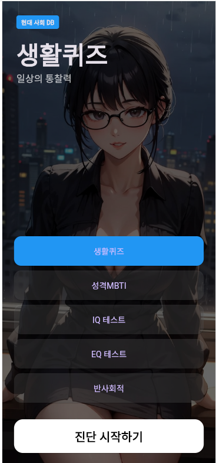

ARI MOBILE은 5가지 정밀 진단 테스트를 하나의 앱으로 통합한 올인원 진단 도구입니다.
포트레이트 모드 전용, 다크 테마, 배경음악 + 효과음 지원, 부드러운 애니메이션 UI로 구성되어 있습니다.
올인원 정밀 진단 테스트 — 생활·성격·인지·정서·다크트라이어드까지 한 번에

ARI MOBILE은 5가지 정밀 진단 테스트를 하나의 앱으로 통합한 올인원 진단 도구입니다.
포트레이트 모드 전용, 다크 테마, 배경음악 + 효과음 지원, 부드러운 애니메이션 UI로 구성되어 있습니다.
메인 화면
조작
앱 실행 즉시 배경음악(BGM)이 30% 볼륨으로 자동 재생됩니다.
특징
주의사항